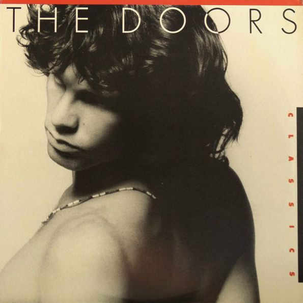

| |

|
|
The Doors Classics
Elektra LP (May 1985)
Anniversary of a classic. A retro review.
1985 - 2020.
Live Aid - COVID-19.
Two cornerstones in recent history everyone old enough
will remember and never forget.
This to illustrate how long this album has been around
for...
For my 10th Birthday, in 1986, my old elementary school
friend was going to buy me a present. "Are there any
Doors records you don't own yet?".
I'll never forget the playground conversation that day. I
refused, he insisted... I didn't really need this, and I
told my friend so, because by this
time I had collected most of the albums and there was
nothing new on it... Nevertheless, needless to say, I was
blown away and over the moon
by his gesture. It's in my collection still, and meets up
with my record player every now and again.
A bit of an oddball perhaps in the world of all things
Greatest Hits, Best Of, Platinum Collection, Archives and
so on. The world of compilation albums.
"The Doors Classics" is not about the chart
topping hits, neither does it focus on what the public at
large would tag as the best songs, or the best known
ones for that matter. Not a career overview and no
collection of rarities... There's no concept at all
really. These are classic songs by a classic band,
final stop. Pointless? Perhaps so, especially in our
modern day and age where everything's online and up for
grabs on YouTube, Spotify, Amazon et al.
We need to go back to 1985 to understand why the record
company felt the need for this.
The 1980s had started with a huge renewed interest in the
Doors, with the inclusion of "The End" in the
movie "Apocalypse Now" by Francis Ford
Coppola. And then there was the first ever Jim Morrison
biography: "No One Here Gets Out Alive", by
Jerry Hopkins and Danny Sugerman.
Followed shortly by the Doors' debut home video, "A
Tribute to Jim Morrison". Suddenly the band appeared
to be more popular and in higher
demand than ever before. Added to this successful wave
was the 1980 "Greatest Hits" compilation,
succeeded by a first opening of the vaults
with 1983's "Alive, She Cried". Both did very
well on the charts. Two years later, mid decade, with
interest in the Doors perhaps declining a bit,
Elektra Records was not about to let their initial
flagship slip into oblivion. Hence a second home video
release, "Dance On Fire", and indeed,
"The Doors Classics".
So far never released on CD officially, "The Doors
Classics" stands as an interesting selection of both
the best and the greatest,
mixed with some high end deep cuts. So here's the
tracklisting. It's easy and fun to pour the songs into a
Spotify playlist for example,
to get the feel and flow of this longplayer. The featured
"Roadhouse Blues", by the way, is the well
known and much used live version
that first appeared on "An American Prayer",
later on "The Doors In Concert", and so on...
Strange Days
Love Her Madly
Waiting for the Sun
My Eyes Have Seen You
Wild Child
The Crystal Ship
Five to One
Roadhouse Blues (Live)
Land Ho!
I Can't See Your Face in My Mind
Peace Frog
The WASP (Texas Radio and the Big Beat)
The Unknown Soldier
Note the absence of hits like "Light My Fire"
and "Riders on the Storm", and of further
compilation standards like "The End".
Unusual indeed.
Classic!
Kevin Chiotis for the Doors Quarterly Magazine Online -
May 2020
|
|